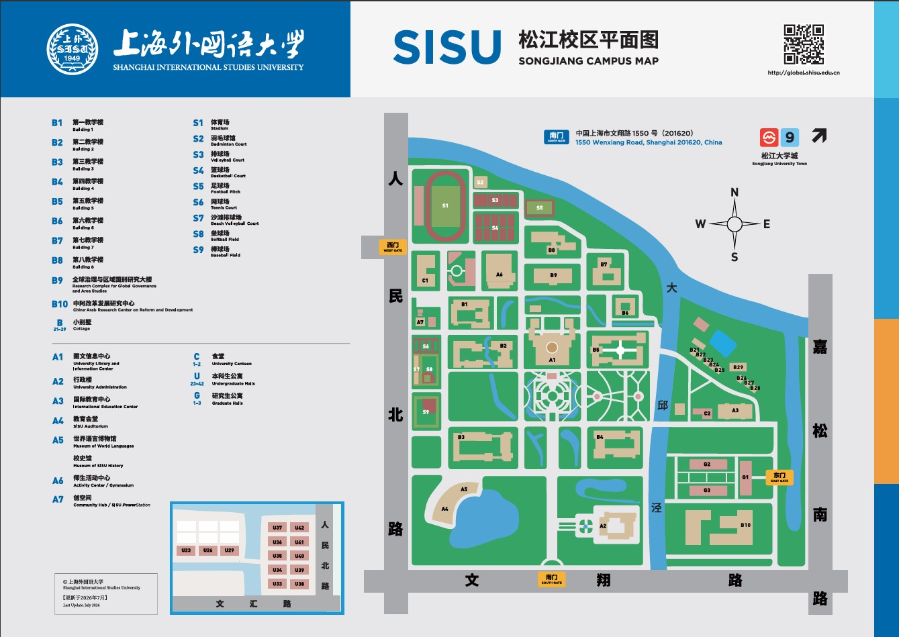
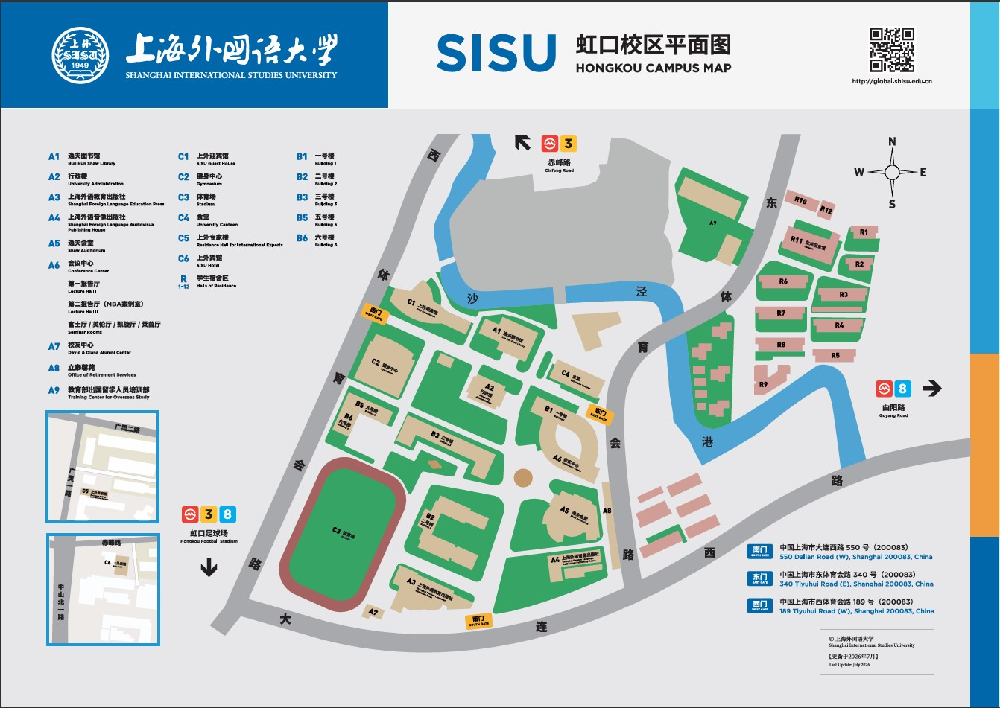

校园地图
以上海外国语大学松江校区为主，整理新生常用地点与快速找路建议。更准确的校园图请以学校官网地图为准。
🗺 校园地图图片
点击图片可放大查看


📍 松江校区基本信息
- 校区地址：上海市松江区文翔路1550号
- 所在区域：松江大学城
- 常用入口：文翔路正门 / 人民北路文汇路附近出入口（具体以现场指示为准）
🏛 新生常用地点
图文信息中心
图书馆、信息中心与自习区域，是常用的学习场所。
教学楼区
松江校区教学楼分布较为集中，包括一教楼、二教楼、三教楼、四教楼等，具体教室以课表为准。
行政楼
办理部分行政事务、咨询相关问题时常会用到。
教育会堂 / 师生活动中心
讲座、演出、大型活动与部分学生活动的主要场所。
食堂与生活服务区
学生食堂、超市、快递点等生活配套集中区域。
学生公寓区
新生宿舍主要分布在校园内及周边学生公寓，具体楼栋以学院/后勤通知为准。
🧭 快速找路建议
- 报到或上课前，先用地图 App 搜索“上海外国语大学松江校区”，提前收藏常用楼栋。
- 第一周可以优先认路：宿舍 → 食堂 → 教学楼 → 图文信息中心 → 行政楼。
- 校园内步行较多，建议穿舒适的鞋；雨天可以提前看好连廊或室内路线。
- 遇到不确定的地点，可以直接问路边的学长学姐，也可以打开右下角林小满聊天气泡询问。